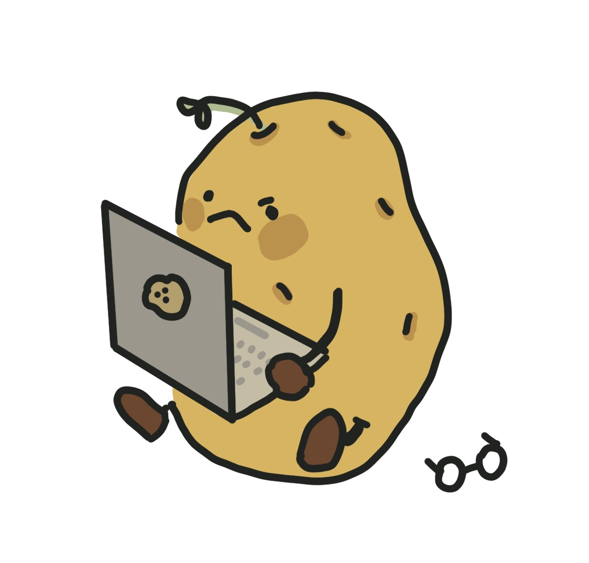

Lukashenko on Tuesday described his view of the negotiations that led to Prigozhin ending his march towards Moscow,
and said the oligarch is now in Belarus per the deal.
“The most dangerous thing, as I understand it, is not what the situation was, but how it could develop and its consequences,”
Lukashenko said, according to Belarussian state media.
“I also realized there was a harsh decision taken - to destroy. I suggested Putin not to hurry. Let’s talk with Prigozhin,
with his commanders.” Lukashenko – a longtime ally of the Russian President – said Putin told him: “Listen, Alex, it’s useless.
(Prigozhin) doesn’t even pick up the phone, he doesn’t want to talk to anyone.”